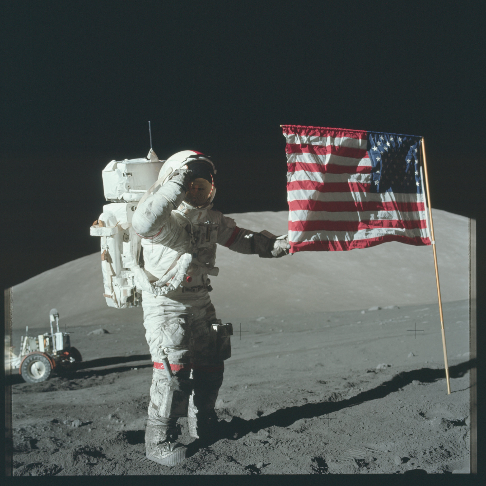

Berilio
Su baja densidad y alta rigidez lo hacen útil en instrumentos y estructuras que deben conservar su forma con gran precisión.

Los segmentos del espejo primario de Webb son de berilio y fueron diseñados para mantener estabilidad a temperaturas extremadamente bajas.
Los materiales existen para permitir una misión.
La selección de materiales se entiende mejor cuando se observa el sistema completo: estructura, movilidad, instrumentos y protección trabajando al mismo tiempo.
Zerodur
Vidrio-cerámica con expansión térmica extremadamente baja, útil en óptica de precisión y espejos astronómicos.
Nitinol
Aleación de níquel y titanio con memoria de forma. Puede recuperar una geometría previamente definida bajo determinadas condiciones.
El diseño debe responder al entorno, no sólo al laboratorio.
Polvo, vacío, temperatura y radiación condicionan la forma en que un material real puede utilizarse fuera de la Tierra.

Escudos térmicos
Los sistemas de protección térmica protegen vehículos y componentes frente a entornos extremos y conectan ciencia de materiales con ingeniería aeroespacial.
Una estructura ligera puede necesitar muchas capas funcionales.
El módulo lunar muestra una combinación de estructura, recubrimientos y aislamiento que responde a distintos problemas a la vez.